Part 1.1: Filters
We can convolve the image with the finite difference operators Dx = (1, -1)T and Dy = (1, -1) to find the gradient. This will help us identify the edges in the picture by applying a certain threshold to the magnitude.
The formula for the magnitude is √((df/dx)2 + (df/dy)2), and the threshold value I used is 0.3.
 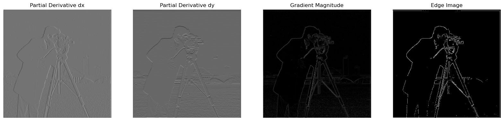
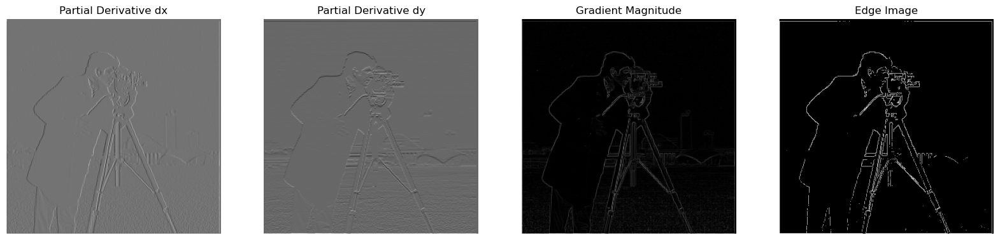
Part 1.2: Derivative of Gaussian (DoG) Filter
We can improve the previous results by applying Gaussian Blur to the original image. We will use the cv2 library to get a 1D Gaussian kernel (cv2.getGaussianKernel()) and then take an outer product with its transpose to obtain a 2D Gaussian kernel. Additionally, instead of convolving twice, we can convole derivative with the Gaussian kernel to achive the same result.
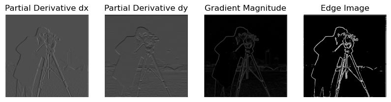Part 2: Image Sharpening
To sharpen the image, I applied Gaussian Blur to obtain the low frequencies. Then, I subtracted the blurred image from the original to extract the high frequencies. The final image is calculated using the formula: im + alpha * (im - blurred). I achieved the best results with an alpha value of 1.5.
Applying sharpening to an already sharp image produced noticeable results, especially around the edges of the cogs, making them more visible and defined.
Part 2.2: Hybrid Images
For this part, I implemented the creation of hybrid images using the method outlined by Oliva, Torralba, and Schyns in their 2006 SIGGRAPH paper. Hybrid images combine the low-frequency (smooth) content of one image with the high-frequency (detailed) content of another, resulting in different visual interpretations at varying distances. To achieve this, I applied a Gaussian filter for low-pass filtering and a high-pass filter by subtracting the Gaussian-filtered image from the original. I then blended the two images. Additionally, I used frequency analysis to visualize the process by displaying the log magnitude of the Fourier transforms.
Original images:


Final result:
Additional examples:
Part 2.3: Multi-resolution Blending and the Oraple Journey
I first created Gaussian stacks for both input images to capture details at different frequencies. These Gaussian stacks serve as the foundation for constructing the Laplacian stacks, which highlight the edges and finer details by capturing the differences between consecutive Gaussian levels.
Additionally, I created a Gaussian stack for a binary mask to define the blending seam between the images. At each level of the stack, I blended the images by combining corresponding levels from both Laplacian stacks, weighted by the mask's Gaussian stack. This approach smoothed the transition between the images, ensuring a seamless blend. Here are the Gaussian and Laplacian stacks:
Here is the visualization of the entire process of blending:
Here is the final result:
Here are some examples of the irregular mask in action:
 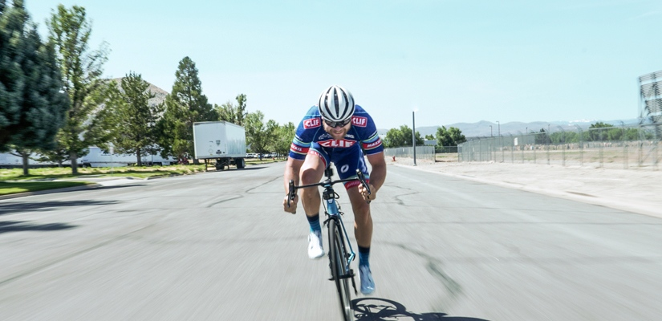
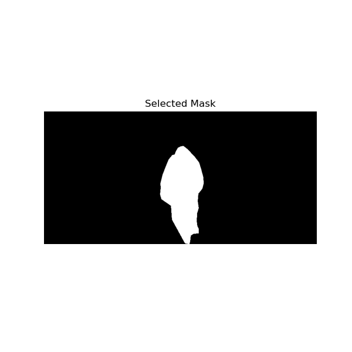
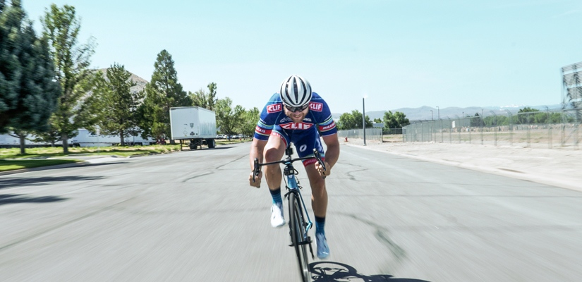
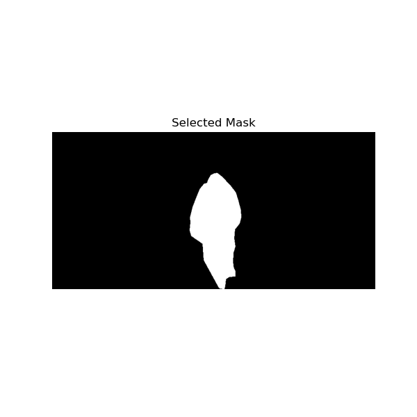
Here is the final result:
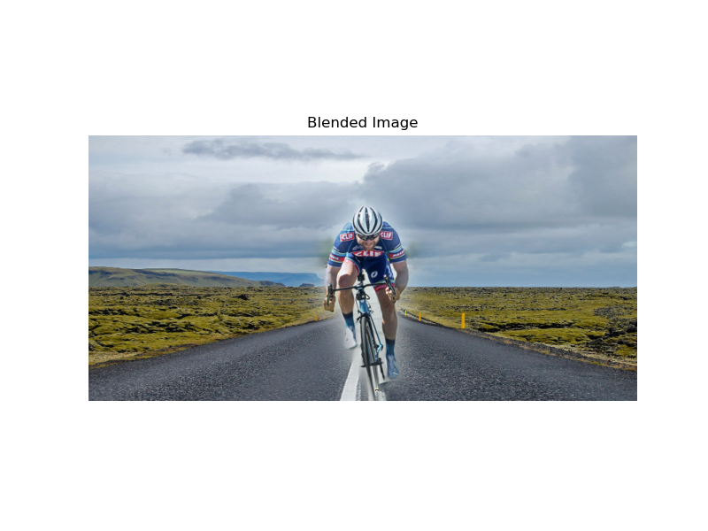Failed Hybrid Image:
I think this attempt of creating hybrid image failed because images had totally different proportions and aligning two images was tricky. I think that using smaller face that looks to the left would work.
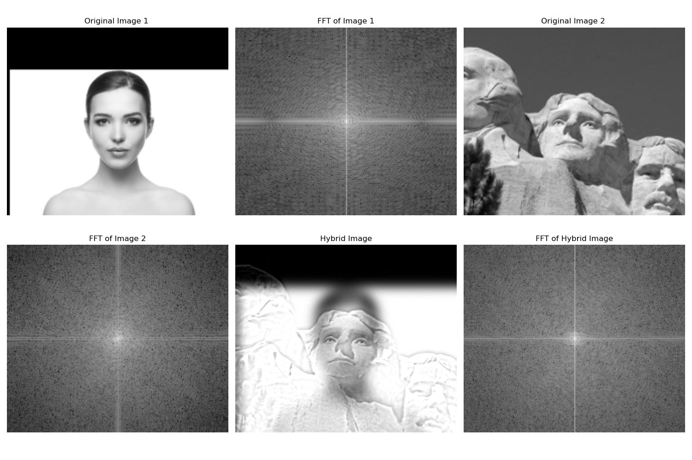Here is a random blended image I decided to include:
Ship's mask
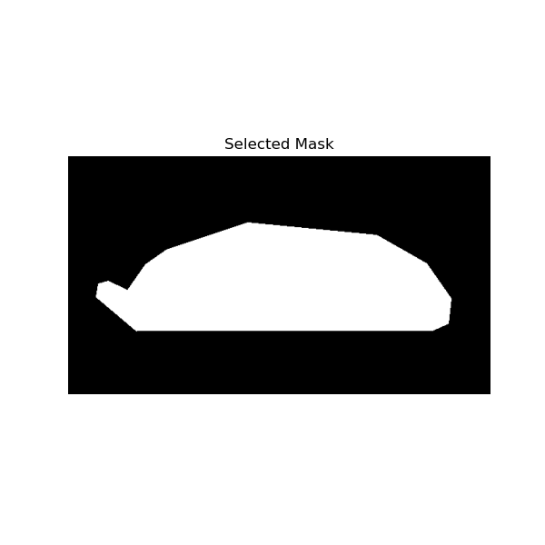 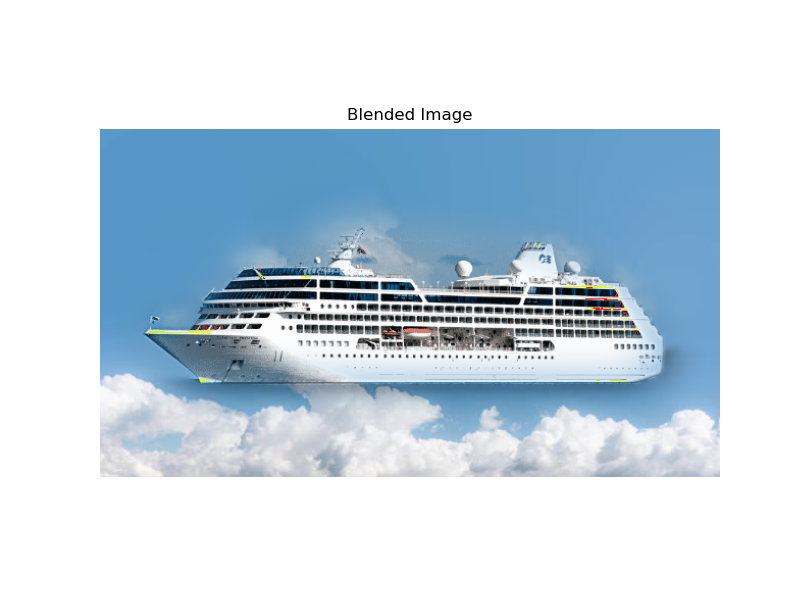Conclusion:
I liked this project, becuase playing with blending different frequencies was really fun. It is really interesting how our perception of image changes depending on the viewing distance. Also, I thought blending images without a clear seam would be much harder, but now I know that It's easy.